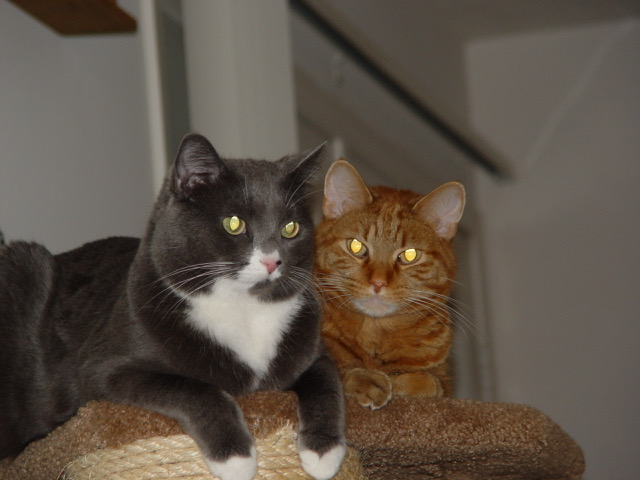

the photo album
here are some of my favorite pictures and videos of me and my childhood for your viewing pleasure

(2004) Calvin and Hobbes!
(2006) Me in my Blue's Clues costume.
(~2006-2007) My dad still references this to this day.

(2013) Chip, 1 y/o, on Christmas, in his new bed.
(2006) Me eating a tomato whole. My mom despises tomatoes.
(2011) The first time playing D&D with dad! I still have my dice.
(2012) New Year's Eve

(2015) Baby Oreo

(2015) Me with my first pair of glasses

(2015) Me with my childhood best friends

(2016) Calvin! ~16 years old

(2017) Hobbes & Oreo. ~17 and 2 years old
(2019) Chip's 7th birthday
..................................................